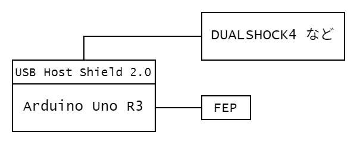
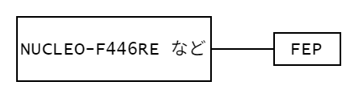
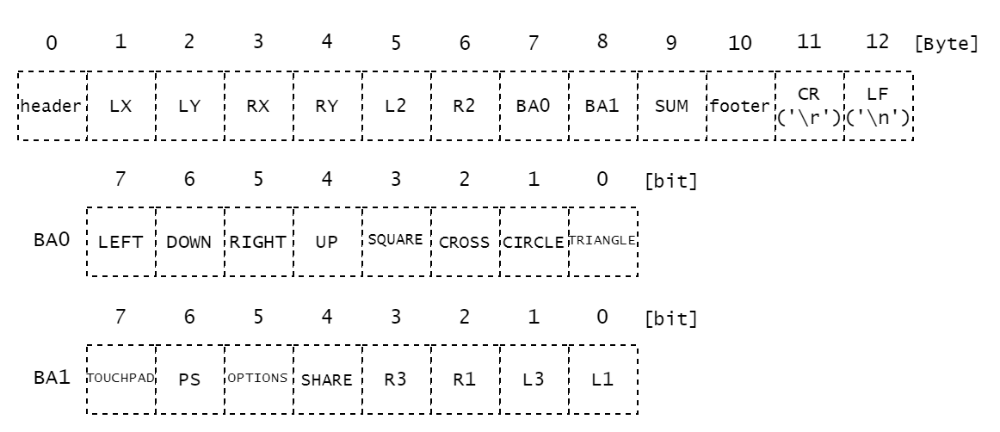

前提条件等
制御(回路・プログラム)に関するお勉強・開発のHomeです。
使用するプログラミング言語は基本的にC言語、C++です。一部、他の言語の知識が混ざる可能性があります。
環境構築等はすでに済んでいるものとして扱い、コードの内容のみになる場合があります。筆者と異なるOS・バージョンを使用する場合はそれぞれの環境に合わせて対応する必要があります。
各開発などのリポジトリは各ページに掲載することもありますが、あくまで参考程度です。
一部に自作のヘッダファイルなどを使用する場合があります。その場合は、そのファイルの中身などを簡単に説明する記事を作成するように心掛けますが、ない場合は中身を見て理解してください。
結局は自分で調べ、データシートなどを確認することがとても大切です。
知りたいことがあれば、調べてみよう。
例えば、「C言語 繰り返し」や「CubeIDE Lチカ F446RE」などで調べるといい感じの記事が出てきます。QiitaやZennなどがその例です。中には個人のサイトで解説をしている方もいます。
データシートはその部品などの名前を検索すると製品ページがあり、そこからデータシートを見れることが多いです。データシートが必要なら、その部品の製品情報を確認するようにしましょう。
ChatGPTなどの生成AIを調べもせずに頼ることはおすすめしません。最初から頼ると意味などの理解が困難になります。
使用環境
- Windows 11 Home ← 推奨
- Ubuntu 22.04 LTS
Macは使用しているソフトウェアが対応していない、機能がないなどの問題点があります。
そのためWindowsを推奨します。その他のOSは自分で対応できる自信のある人のみ使用することをおすすめします。
使用中(使用予定)の機器一覧
- NUCLEO-F446RE(部・私物)
- NUCLEO-F303K8(部)
- Arduino Uno Rev3(部・私物)
- Raspberry Pi Pico(私物)
- DUALSHOCK4(部)
- DUALSHOCK3(部)
- DUALSENSE(私物)
- USB Host Shield 2.0(部・私物)
- (ATOM Matrix)(私物)
- (ESP32-WROVER-E)(私物)
基礎知識
git / GitHub
DCモーターの制御
コントローラーのデータ
受信側(lib)
送信側(lib)
git / GitHub
導入
-
gitのダウンロードをします。 Download for Windows
基本的にClick here to downloadをクリックし、インストーラーをダウンロードしてください。 -
ダウンロードしたインストーラー
Git-x.xx.x-64-bit.exeをクリックし、インストーラーを起動します。
基本的にNextを選択してください。 -
インストールが完了したら
Git Bashを起動します。
デスクトップのショートカット、あるいは、スタートから起動してください。 -
gitのバージョンを確認し、インストールできていることを確認します。 -
GitHubへの登録をします GitHub
すでにGitHubアカウントがある人は右上のSign inを選択しログインしてください。
アカウントがない人はSign upを選択し、新規作成を行ってください。-
Email: メールアドレスを入力 -
Password: 15文字以上、または、数字と小文字を含む8文字以上。機構本部のパスワード規約に則ってください。 -
Username: ユーザー名を半角英数字で構成します。 -
Your Country/Region: 国と地域はJapanだと思います。 -
Email preferemces: お知らせメールを受け取るかどうかの項目です(自由)。
Create accountで作成完了です。
-
SSHの設定
学内LANなどからサーバーと通信を行うためには、SSHによる認証を使用しなければなりません。
-
SSH鍵を作成します。 -
~/.ssh/に移動します。フォルダがない場合は作成してください。$ ls -a ~ | grep .ssh .ssh/ # ある # ない場合 $ mkdir ~/.ssh $ cd ~/.ssh/ -
すでに
SSH鍵が作られているか確認します。$ ls # なにも表示されない、または、known_hostsのみならok -
ssh-keygen.exeでSSH鍵を作成します。$ ssh-keygen -t rsa -C [email@email.com] -f [id_rsa_username] # email@email.com は GitHub に登録したメールアドレス # id_rsa_username は 出力ファイル名(自由) Generating public/private rsa key pair. Enter passphrase (empty for no passphrase): # SSH鍵のパスワード Enterでパスワードなし Enter same passphrase again: # パスワードの再入力 Enter Your identification has been saved in id_rsa_username Your public key has been saved in id_rsa_username.pub The key fingerprint is: SHA256:------ email@email.com The key's randomart image is: ---ssh鍵が生成されます。- 公開鍵と秘密鍵の両方が生成されていることを確認してください。
$ ls id_rsa_username known_hosts id_rsa_username.pub -
id_rsa_username.pubの内容をコピーします。# (Git Bashの場合) $ cat id_rsa_username.pub | clip # id_rsa_username.pub の中身をクリップボードにコピー -
GitHubにSSH鍵を登録します GitHubアイコン-Settings-Access-SSH and GPG keys-SSH Keysで移動します。New SSH keyを選択してください。
Titleは鍵の名前を設定します。パソコン名や学校名などにしておくとわかりやすいです。
Key typeはAuthentication Keyに設定します。
Keyに先ほどコピーした鍵をペーストしてください。Add SSH keyでSSH鍵を登録します。
-
SSHの設定をします。
~/.ssh/configを開いてください。なければ作成してください。$ ls config # ある # ない場合 $ touch config $ code config -
アカウントと
SSH鍵を紐づける設定をします。Host github.com HostName github.com IdentityFile /C/Users/user_name/.ssh/id_rsa_username User git Port 22 TCPKeepAlive yes IdentitiesOnly yes -
SSHの確認をします。
通信ができるかどうか確認します。$ ssh -T github.com Hi username! You've successfully authenticated, but GitHub does not provide shell access.
gitコマンドの基本
-
clone
リモート(
Gitのサーバー)からリポジトリをローカル(自分の作業環境)に複製します。$ git clone [remote URL] # 実行するディレクトリに注意実行したディレクトリにそのリポジトリが複製されます。
[remote URL]はGitHubから確認できます。
GitHubからcloneしたいリポジトリのページまで移動してください。緑色の<>Codeを押しLocalのCloneのSSHからコピーできます。 -
add
ローカルで変更したファイルなどをリモート反映させるファイルを選択します。
「コミットに含めるファイルを選択する」と同じことです。$ git add [ファイル名1] [ファイル名2] … # ファイル名(フォルダ名)は何個でも書けるはずです。 -
commit
コミットを作成します。
addしたファイルをひとまとまりにします。$ git commit -m "[コミットメッセージ]" # コミットメッセージをつけることができますコミットメッセージには何を更新したのかなどの内容を書いておくとわかりやすいです。
add：ファイルの新規作成や新規追加などupdate：ファイルの中身の更新などfixed、fix：バグの修正などstyle：動作に問題のない部分の修正、インデントの修正などdocs: ドキュメントの編集など
コミットメッセージは日本語でも問題はありません。
-
push
作成したコミットをリモートに反映させます。
$ git push origin main # mainブランチにpushします -
status
更新されたファイルなどがあるか確認します。
$ git status Your branch is up to date with 'origin/main'. Changes not staged for commit: (use "git add/rm <file>..." to update what will be committed) (use "git restore <file>..." to discard changes in working directory) ---現在のリポジトリで更新されたファイルがあるかどうか、確認できます。
-
pull
リモートの変更をローカルに反映させます。
「他の端末などで変更を加え、リモートに反映させた。手元には反映前のコードなどがある。」というときにわざわざディレクトリを削除してもう一度cloneするのは時間がかかります。pullはfetch(変更情報を持ってくる)とmerge(変更を反映させる)を同時に行います。mergeするときにローカルにリモートにはない変更があった場合は、コンフリクトが発生します。発生した場合は、手動でmerge作業を行う必要があります。
branch
普段はおそらくmainブランチ、または、masterブランチを使用していると思います。
ここでは、開発用のブランチmainと更新用(安定版)のブランチreleaseにわけておきたいとします。mainブランチは日々の開発によりたくさんの更新が入りどのコミットでうまくいったのかがわからないこともあります。ブランチはわけずにタグを作成して、そのときのコミットに戻れるという機能もありますが、それはbranchの次に紹介します。
-
ブランチの作成をします。
git branch devedeveという名前のブランチがローカルに作成されました。$ git branch * main deve現在ローカルにあるブランチの一覧を表示できます。
-
checkout
ブランチを作成したらそのブランチに移動します。
git checkout [ブランチ名] -
push
あとは変更したファイルを
addしたりcommitしたりしても問題はありません。$ git push origin [ブランチ名] # origin で指定しないとpushできないことが多いです -
merge
mainブランチだけ先に進み、deveブランチが遅れている場合、deveブランチにmainブランチの状態にしたいなどということがあると思います。
そんなときに、いちいちmainブランチからdeveブランチにコピペするのは時間の無駄です。mergeを使用します。
進めたいブランチにcheckoutし、mergeを実行します。git merge [進んでいるブランチ名] -
ブランチの削除
ブランチが不必要になった場合に削除できます。
git branch -d [ブランチ名]ローカルのブランチが削除されます。
git push origin --delete [ブランチ名]リモートのブランチが削除されます。
-
確認
ローカルにあるブランチを確認ができます。
git branchリモートにあるブランチを確認できます。
git branch -r
tag
特定のバージョンに戻りたい(リリースバージョンとか)というときにリリースを作成するという事もできます。しかし、検索などに引っかかってしまう可能性があります。それが嫌だという場合はtagを作成し、そのタグに戻るという行為をします。
-
tagの作成とpush
タグを作成する前に変更などはすべてリモートに反映させておきましょう。
git tag -a [タグ名] -m "[タグのメッセージ]"これでローカルに
tagを作成します。ローカルのcommitにtagがつけられます(たぶん)。git push origin [タグ名]これにより、タグを作成し、作成したタグをリモートに反映することができます。
-
tagの確認
git tagローカルにあるタグを確認できます。
-
tagの削除
ローカルにあるタグを削除します。
git tag -d [タグ名]リモートにあるタグを削除します。
git push origin --delete [タグ名]
DCモーターの制御
制御用回路
回路的には以下のようになっています。

モタドラICの動作電圧が12Vでマイコンからの信号の電圧が5Vか3.3Vなので電圧を上げる必要があります。それをフォトカプラで信号のやり取りを行っています。
また、PWMの周期を83[μs]に設定します(宗派)。フォトカプラが変換に対応する周波数によって決まっています。
PWM
Pulse Width Modulationの略でパルス幅変調といいます。
一定周期の中で出力がHIGHの時間とLOWの時間の比(デューティー比)で中間の電圧を擬似的に表現します。
PWMの出力波形は以下の図のようなものです。

GPIOピンの出力が5Vでデューティー比が25%であれば、出力は1.25Vになります。出力電圧は以下の式で求められます。
$$ 出力電圧 = {最大電圧} \times {デューティー比} $$
デューティー比が小さいと素子によってはデューティー比0％とあまり変わらない結果が得られるものもあります。各素子の動作電圧などを確認してください。
出力の決定
モーターへの出力はDigitalとPWMの2つで決まり、DigitalとPWMの差が出力になります。図示すると以下のようになります。

Digitalの値がモーターの回転方向に対応し、PWMのデューティー比がモーターの回転速度(印加電圧)と対応します。
コントローラーのデータ
通信モジュール
双葉電子のFEP02を使用しています。
920MHz帯の無線モジュールです。UART(シリアル通信)でデータの送受信を行っています。Baudrateは38400bpsの設定になっているものが多いです。
送信側
使用機器
Arduino Uno R3USB Host Shield 2.0FEP- コントローラー
DUALSHOCK4など
以下の図のように接続します。

受信側
使用機器
- マイコン
STM32F446RET6やSTM32F303K8T6など FEP
以下の図のように接続します。

送受信するデータ
DUALSHOCK4の場合

DUALSHOCK3の場合

DUALSENSEの場合

データ型はすべてuint8_tで、合計13Byteのデータになっています。
header : 0xaf 先頭データを意味します。
SUM : データ確認用のSUMです。 1~8Byteの合計値になっています。
footer : 0xed 終端データを意味します。
受信側ライブラリの使い方
ライブラリの場所
GitHub/2025-B/receiveControllerのmainブランチ、receiveF446RE/lib/rxfepにあります。使用する場合はrxfepフォルダごとダウンロードして使用してください。
使用方法(DUALSHOCK4の場合)
ページの下にサンプルプログラムを紹介しています。
include & using
-
platformioのプロジェクトのlibフォルダにrxfepをコピーしてください。 -
使用するファイルでヘッダファイルをインクルードし、名前空間の設定を行います。
#include "rxDualshock4.hpp" namespace using snct; -
namespace using snct;を行わない場合は、使用する際にsnct::を先頭に付け加えてください。
変数などの宣言
-
使用するためには次のものが必要になります。
- データを格納する構造体
UARTを使用するためのUnbufferedSerialのインスタンス- 使用したいコントローラー用のインスタンス
struct RxDualshock4::DS4_struct data; mbed::UnbufferedSerial fep(PinName::PC_10, PinName::PC_11, 38400); // PC_10はUART3_TX、PC_11はUART3_RX、38400はbaudrate RxDualshock4 ps4(fep,&data,RxController::GET_TYPE::polling);
RxDualshock4の引数
ps4(fep, &data,RxController::GET_TYPE::polling);では3つの引数があります。fep：UnbufferedSerialのインスタンスdata：構造体のポインタRxController::GET_TYPE::polling：受信方法の設定polling：ポーリング処理(データが来るまで一定期間待機する)interrupt：割り込み受信
受信する
// GET_TYPE::pollingの場合
if(ps4.getDS4()){
// 受信成功時の処理
}else{
// 受信失敗時の処理
}
// GET_TYPE::interruptの場合
if(ps4.getDS4_IT()){
// 受信成功時の処理
}else{
// 受信失敗時の処理
}
受信したデータの使用方法
led.write(data.CIRCLE);
data.《ほしいデータ名》でアクセスします。
uint8_t：LX、LY、RX、RY、L2、R2
bool：TRIANGLE、CIRCLE、CROSS、SQUARE、UP、RIGHT、DOWN、LEFT、L1、L3、R1、R3、SHARE、OPTIONS、PS、TOUCHPAD
使用する関数の引数と戻り値(DUALSHOCK4の場合)
コンストラクタ
RxDualshock4(mbed::UnbufferedSerial& unbuffered_serial_obj, struct RxDualshock4::DS4_struct *struct_p, RxController::GET_TYPE type);unbuffered_serial_obj：UnbufferedSerialのインスタンス*struct_p：構造体のポインタtype：受信方法を指定します。デフォルトでは割り込み受信になります。
- グローバルで宣言することが多いです。
getDS4()
- ポーリング受信の場合に使用します。
- 引数はありません。
- 戻り値は受信成功時は
true、失敗時はfalseが返ります。
getDS4_IT()
- 割り込み受信の場合に使用します。
- 引数はありません。
- 戻り値は受信成功時は
true、失敗時はfalseが返ります。
その他設定用関数の引数と戻り値(DUALSHOCK4の場合)
基本的に使用しません。
setHeader()
- 引数なしの場合
- ヘッダー符号をデフォルトの
0xafに設定します。
- ヘッダー符号をデフォルトの
- 引数
uint8_t headerheaderをヘッダー符号に設定します。
- 戻り値
- 設定したヘッダー符号を返します。
setFooter()
- 引数なしの場合
- フッター符号をデフォルトの
0xedに設定します。
- フッター符号をデフォルトの
- 引数
uint8_t footerfooterをフッター符号に設定します。
- 戻り値
- 設定したフッター符号を返します。
setTimeout()
- ポーリング受信の場合に使用します。
- 引数なしの場合
- タイムアウトの時間をデフォルトの
15msに設定します。
- タイムアウトの時間をデフォルトの
- 引数
chrono::milliseconds timetimeをタイムアウトの時間に設定します。
- 戻り値
- 設定したタイムアウトの時間を返します。
setRetry()
- ポーリング受信の場合に使用します。
- 引数なしの場合
- リトライ回数をデフォルトの
16に設定します。
- リトライ回数をデフォルトの
- 引数
uint8_t retryretryをリトライ回数に設定します。
- 戻り値
- 設定したリトライ回数を返します。
サンプルプログラム
使用しているものです。DUALSHOCK4用のファイルとコントローラー共通のファイルが必要になります。
lib/rxfeprxController.cpprxController.hpprxDualshock4.cpprxDualshock4.hpp
STM32F446RET6
#include <mbed.h>
#include "rxDualshock4.hpp" // ヘッダファイルをインクルードします。
#define DBG_M
// namespace using snct;をしていないからsnct::をつけます。
struct snct::RxDualshock4::DS4_struct data;
// UnbufferedSerialのインスタンスを作成
mbed::UnbufferedSerial fep(PinName::PC_10, PinName::PC_11, 38400);
// RxDualshock4のインスタンスを作成
snct::RxDualshock4 ps4(fep,&data,snct::RxController::GET_TYPE::interrupt);
mbed::PwmOut em_led(PB_15); // 緊急停止sw用のチェックLEDのインスタンス
mbed::PwmOut fep_led(PB_14); // 受信成功失敗用のチェックLEDのインスタンス
mbed::DigitalIn em_sw(PA_4); // 緊急停止sw用のインスタンス
constexpr uint8_t FAIL_MAX = 3; // 受信失敗の上限値
uint8_t fail_count = FAIL_MAX * 2; // 受信失敗カウンタ
bool em_sw_status = 0; // 緊急停止swの状態
bool fep_status = 0; // 受信の状態
int main(void){
em_led.period_us(83); // LEDの設定
em_led.write(0);
fep_led.period_us(83);
fep_led.write(0);
while(true){ // main loop
#ifdef DBG_M
printf("%d ", fail_count);
#endif
em_sw_status = em_sw.read();
if(!em_sw_status){
fep_status = ps4.getDS4_IT(); // 割り込み受信
if(fep_status){
fail_count = 0;
#ifdef DBG_M // 各データを出力
char buf[64] = {0};
sprintf(buf,
"LX:%3d LY:%3d RX:%3d RY:%3d L2:%3d R2:%3d Pressed Button: ",
data.LX, data.LY, data.RX, data.RY, data.L2, data.R2
);
printf(buf);
if(data.TRIANGLE) printf("TRIANGLE ");
if(data.CIRCLE) printf("CIRCLE ");
if(data.CROSS) printf("CROSS ");
if(data.SQUARE) printf("SQUARE ");
if(data.UP) printf("UP ");
if(data.RIGHT) printf("RIGHT ");
if(data.DOWN) printf("DOWN ");
if(data.LEFT) printf("LEFT ");
if(data.L1) printf("L1 ");
if(data.L3) printf("L3 ");
if(data.R1) printf("R1 ");
if(data.R3) printf("R3 ");
if(data.SHARE) printf("SHARE ");
if(data.OPTIONS) printf("OPTIONS ");
if(data.PS) printf("PS ");
if(data.TOUCHPAD) printf("TOUCHPAD ");
#endif
}else{
fail_count++;
if(fail_count > FAIL_MAX + 1){
fail_count--;
}
#ifdef DBG_M
printf("fail ");
#endif
}
}else{
#ifdef DBG_M
printf("em_sw_pushed ");
#endif
}
fep_led.write(!fep_status); // チェックLEDに出力
em_led.write(em_sw_status);
#ifdef DBG_M
printf("\n");
#endif
}
}
送信側ライブラリの使い方
ライブラリの場所
GitHub/2025-B/transmitControllerのmainブランチ、transmitFromArduino/lib/txfepにあります。使用する場合はtxfepフォルダごとダウンロードして使用してください。
使用方法(DUALSHOCK4の場合)
ページの下にサンプルプログラムを紹介しています。
include & using
-
platformioのプロジェクトのlibフォルダにtxfepをコピーしてください。 -
使用するファイルでヘッダファイルをインクルードし、名前空間の設定を行います。
#include "txDualshock4.hpp" namespace using snct; -
namespace using snct;を行わない場合は、使用する際にsnct::を先頭に付け加えてください。
変数などの宣言
-
使用するためには次のものが必要になります。
- データを格納する構造体
UARTを使用するためのSoftwareSerialのインスタンスterminalに出力するためのHardwareSerialのインスタンスUSBのインスタンス- コントローラーのインスタンス
- 使用したいコントローラー用のインスタンス
USB usb; // USB Host Shield 2.0の PS4USB PS4(&usb); // USB Host Shield 2.0の SoftwareSerial fep(7,6); // SoftwareSerialの TxDualshock4::DS4 data; // 構造体 TxDualshock4 ps4(fep,Serial,usb,PS4,&data);
TxDualshock4の引数
ps4(fep,Serial,usb,PS4,&data);では5つの引数があります。fep：SoftwareSerialのインスタンスSerial：HardwareSerialのインスタンスusb：USBのインスタンスPS4：PS4USBのインスタンスdata：構造体のポインタ
各クラスの初期化等
void setup(){
Serial.begin(9600); // HardwareSerialの開始 baudrate:9600
fep.begin(38400); // SoftwareSerialの開始 baudrate:38400
usb.Init(); // USBの初期化
}
コントローラーのデータを取得する
if(ps4.getDS4()){
// 成功時の処理
}else{
// 失敗時の処理
}
送信する
ps4.putDS4();
取得したデータの使用方法
if(data.CIRCLE){ // CIRCLEが押されているなら
PS4.setLed(Red); // コントローラーのLEDを赤に
}else{
PS4.setLed(Blue); // コントローラーのLEDを青に
}
data.《ほしいデータ名》でアクセスします。
uint8_t：LX、LY、RX、RY、L2、R2
bool：TRIANGLE、CIRCLE、CROSS、SQUARE、UP、RIGHT、DOWN、LEFT、L1、L3、R1、R3、SHARE、OPTIONS、PS、TOUCHPAD
使用する関数の引数と戻り値(DUALSHOCK4の場合)
コンストラクタ
TxDualshock4(SoftwareSerial& software_serial,HardwareSerial& hardware_serial,USB& usb,PS4USB& ps4_usb,TxDualshock4::DS4 *struct_p);software_serial：SoftwareSerialのインスタンスhardware_serial：HardwareSerialのインスタンスusb：USBのインスタンスps4_usb：PS4USBのインスタンス*struct_p：構造体のポインタ
- グローバルで宣言することが多いです。
getDS4()
- コントローラーのデータを構造体に格納します。
- 引数はありません。
- 戻り値は成功時(コントローラー接続時)は
true、失敗時はfalseが返ります。
putDS4()
- コントローラーのデータを
UARTで送信します(HardwareSerial)。 - 引数はありません。
- 戻り値はありません。
showDS4()
- コントローラーのデータを表示します(
SoftwareSerial)。 - 引数はありません。
- 戻り値はありません。
その他設定用関数の引数と戻り値(DUALSHOCK4の場合)
基本的に使用しません。
setHeader()
- 引数なしの場合
- ヘッダー符号をデフォルトの
0xafに設定します。
- ヘッダー符号をデフォルトの
- 引数
uint8_t headerheaderをヘッダー符号に設定します。
- 戻り値
- 設定したヘッダー符号を返します。
setFooter()
- 引数なしの場合
- フッター符号をデフォルトの
0xedに設定します。
- フッター符号をデフォルトの
- 引数
uint8_t footerfooterをフッター符号に設定します。
- 戻り値
- 設定したフッター符号を返します。
setInterval()
- 送信間隔(遅延)を設定します。
- 引数なしの場合
- 送信間隔の時間をデフォルトの
8msに設定します。
- 送信間隔の時間をデフォルトの
- 引数
unsigned long intervalintervalを送信間隔の時間に設定します。
- 戻り値
- 設定した送信間隔の時間を返します。
サンプルプログラム
使用しているものです。DUALSHOCK4用のファイルとコントローラー共通のファイルが必要になります。
lib/txfeptxController.cpptxController.hpptxDualshock4.cpptxDualshock4.hpp
Arduino Uno R3USB Host Shield 2.0DUALSHOCK4
#include "txDualshock4.hpp" // ヘッダファイルをインクルードします。
// USBのインスタンスを作成
USB usb;
// PS4USBのインスタンスを作成
PS4USB PS4(&usb);
// SoftwareSerialのインスタンスを作成
SoftwareSerial fep(7,6);
// namespace using snct;をしていないからsnct::をつけます。
snct::TxDualshock4::DS4 data;
// TxDualshock4のインスタンスを作成
snct::TxDualshock4 ps4(fep,Serial,usb,PS4,&data);
bool TOUCHPAD_status = 1;
void setup(){
Serial.begin(9600); // HardwareSerialの開始
fep.begin(38400); // SoftwareSerialの開始
usb.Init(); // USBの初期化
}
void loop(){
if(ps4.getDS4()){ // コントローラーのデータを取得
if(data.TOUCHPAD){
TOUCHPAD_status ^= 0x01;
}
if(TOUCHPAD_status){
Serial.print("em ");
PS4.setLed(Red);
}else{
PS4.setLed(Blue);
}
data.TOUCHPAD = TOUCHPAD_status;
ps4.putDS4(); // 送信
ps4.showDS4(); // 表示
}else{
Serial.println("not connected");
}
}
C言語 / C++
機械(コンピューターなど)にさせる処理を記述する言語です。人と人間をつなぐ言語です。
プログラミング言語には様々な種類があります。
また、プログラミング言語で記述されたものをプログラムと言います。
英語で記述されたものを英文と言うのと同じです。
数多のプログラミング言語の中でも有名かつ古くから利用されているプログラミング言語の1つです。
システムの記述を目的として開発され、人間にも理解しやすい仕様で、コンピューターを直接操作するような特徴を併せ持ちます。
実行するためにはコンパイルとリンク(ソースコードを機械語に変換)が必要になります。
ウォーターフォールモデルに則って作成することをおすすめします。
- 内容の整理
- プログラムの設計
- プログラムの作成
- コンパイル・リンク
- 実行
- 評価
- 完成
順番に行っていき、問題が発生したら問題の箇所に戻り、再度手順通りに作成を行います。
C言語(基礎編)
C言語の基本構成
C言語のプログラムは関数が1つ以上集まって構成されます。プログラムを実行するためにはmain関数が必須であり、main関数はプログラムの実行時に一番最初に実行される関数です。
それぞれの関数は1つ以上の文から構成され、引数(ひきすう)と戻り値の型を持ちます。
文は;(セミコロン)で区切られ、改行などでは区切られません。
世界でも最も有名と言われているサンプルプログラムHello,World!を例に説明します。
#include <stdio.h>
int main(void){
printf("Hello,World!\n");
return 0;
}
-
#include <stdio.h>- あらかじめ用意されている標準入出力関数をプログラムで利用するために読み込むための命令です。
- プログラムに組み込むファイル名を
<>で囲むとシステムで用意されているファイルを、""で囲むとユーザーが用意したファイルを読み込むことができます。
-
int main(void){- 実行するために必要なmain関数の宣言・定義です。この場合は、関数の戻り値の型はint(整数型)で、引数はな空(void)であることを示しています。
型と引数については、後で説明します。現段階では存在を覚えてください。 -
printf("Hello,World!\n");- 標準出力(基本はターミナルの画面)に
""(ダブルクォーテーション)で囲まれた文字列を出力する関数です。 stdio.hで定義されています。
- 標準出力(基本はターミナルの画面)に
-
return 0;- 関数の戻り値を0とし、関数の終了を意味します。ほとんどのシステムではmain関数の戻り値0は正常終了を意味します。
-
}- 関数の終わりを意味します。main関数宣言部の括弧と中身を挟んでmain関数の範囲を表現しています。
C言語は、関数の中身は上の文から順番に実行されます。return文を実行すると、関数が終了するため、関数内のその後の文は実行されません。
int main(void){
printf("Hello"); // 実行される
printf("World"); // 実行される
return 0; // 実行される
printf("!\n"); // 実行されない
}
コメント
ソースコードの中で、動作には影響しない注釈をつけることができます。その注釈のことを指します。
C言語では//(スラッシュ2つ)と/* */による2つの記述方法があります。
//はこれ以降のその行をコメントとします。
/* */は/*と*/で囲まれた最小区間をすべてコメントとします。こちらは改行が含まれていても問題ありません。
// ここはコメントです。
ここはコメントではありません。 // しかし、ここはコメントです。
/* ここはコメントです。
ここもコメントです。
/* ここもコメントです。 */ ここはコメントではありません。
*/ ここもコメントではありません。
// ここはコメントです。
データ型と変数
変数や関数の戻り値など、データの格納や受け渡しのときのデータの種類を決める型のことです。
主なデータ型を紹介します。
- 文字(1文字)型：
char - 整数型：
char、short、int、longなど - 実数型：
float、double - 空：
void
文字型は、ASCIIコードの文字を扱えます。半角英数字・半角記号と認識しておいても問題ありません。
整数型は、最上位ビットを符号部とし格納します。
実数型は、浮動小数点方式(IEEE 754)で格納します。
変数はデータ型と変数名を持ちます。変数名にはアルファベットとアンダースコア(アンダーバー)、数字を使用できます。しかし、変数名の先頭に数字を使用することはできません。
また、同じ変数名をスコープ内に複数置くことはできません。
スコープについては後で話します。
型 変数名;
int x;
同じ型の変数を複数宣言する場合は、,(カンマ)で区切って並べることができます。
int x_1, x_2;
char c_1, c_2;
変数に値を代入する場合は、=(イコール)を使用します。
x = 11; // int x;
c = 's'; // char c;
y = x; // int y; 変数yに変数xの値を代入する
左辺の変数に右辺の値を格納します。値を代入する場合は値と変数の型を一致させる必要があります。
C言語では、文字と文字列と数値は異なります。
文字を表現するためには、文字を''(シングルクォーテーション)で囲います。
文字列を表現するためには、文字を""(ダブルクォーテーション)で囲います。
数値を表現するためには、数字をそのまま記述します。
'c' // 「c」という文字(1文字)
"abc" // 「abc」という文字列
30 // 「30」という数値
演算子
数値や変数などを使用して、算術計算を行うときに使用します。
+：加算-：減算*：乗算/：除算%：剰余算
計算結果の変数などへの代入は、値の代入と同じ方法です。計算結果のデータ型は、整数型同士の演算は整数型になり、それ以外の組み合わせの演算では実数型になります。
演算順序は数学と同じで括弧→乗除→加減です。
a + b
a - b
a * b
a / b
a % b // 整数型のみ
数学では、先に優先したい演算を様々な括弧(()、{}、[])で囲います。
C言語では演算の括弧はすべて()で囲い、次の式のような記述になります。
s = ((x_1 + x_2) - (y_1 + y_2)) * 2;
数値や変数などを使用して、論理計算を行うときに使用します。
論理演算には種類があり、ビット単位での演算と変数や数値単位での演算の2つがあります。
ビット単位の演算
&：論理積(AND)|：論理和(OR)^：排他的論理和(XOR)~：否定(NOT)
a & b
a | b
a ^ b
~a
変数や数値単位での演算
C言語では、ビット単位ではなく変数や数値に対して論理演算を行う場合は、0を偽(false)、それ以外を真(true)として扱います。
&&：論理積(AND)||：論理和(OR)!：否定(NOT)
a && b
a || b
!a
変数や数値の大小関係を調べるときに使用します。演算結果は式が成り立つ場合は1(true)、成り立たない場合は0(false)を得ることができます。
| 数学表現 | ｃ言語表現 |
|---|---|
| = | == |
| < | < |
| > | > |
| ≦ | <= |
| ≧ | >= |
| ≠ | != |
特に、数学表現の=(イコール)はC言語では代入を意味するため間違えないよう注意してください。
変数の値を1増減する演算子です。
++：増分(インクリメント)--：減分(デクリメント)
前置増減(++a、--b)と後置増減(a++、b--)の2種類があります。
前置増減は変数の値を増減した後に、変数の値を使用します。反対に、後置増減が変数の値を使用した後に、変数の値を増減します。
変数や数値を2進数表記で左右にビットシフトします。シフトして空いたビットは0で埋められます(シフトする値が負の場合は0ではなく1で埋められる場合があります)。
>>：右シフト<<：左シフト
変数に値を代入するときに、他の演算を同時に行うことができます。
=：単純代入：a = b+=：加算代入：a += bはa = a + bと同じ-=：減算代入：a -= bはa = a - bと同じ*=：乗算代入：a *= bはa = a * bと同じ/=：除算代入：a /= bはa = a / bと同じ%=：剰余代入：a %= bはa = a % bと同じ<<=：左シフト代入：a <<= bはa = a << bと同じ>>=：右シフト代入：a >> = bはa = a >> bと同じ&=：ビット論理積代入：a &= bはa = a & bと同じ|=：ビット論理和代入：a |= bはa = a | bと同じ^=：ビット排他的論理和代入：a ^= bはa = a^+ bと同じ
演算子には優先順位があります。ここでは紹介しませんが、もしいろいろな演算子を式中に使用していて、思ったとおりに動作しない場合は調べてみてください。
()をつけるとそこが優先して演算されます。
整数を文中にそのままの数値を記述すると、それは10進数と解釈されます。C言語では2進数、16進数といった他の基数表現でも数値を記述することができます。
2進数は、数値の先頭に0bを、16進数は、数値の先頭に0xをつけます。
int x_10 = 16; // 10進数の16
int x_2 = 0b1010; // 2進数の1010。10進数では10
int x_16 = 0x20; // 16進数の20。10進数では32
標準入出力関数
ターミナルの画面に文字や数値を出力するときはprintf()を使用します。
printf("書式文字列", 引数1, 引数2, ...);
書式文字列は出力する書式を指定します。
printf("Hello,World!\n");
int x = 3;
printf("%d\n", x);
%dは出力変換指定子・フォーマット指定子と呼びます。一部を紹介します。
| 記号 | 対応する型 |
|---|---|
| %d | 整数 |
| %f | 実数 |
| %c | 文字 |
他にもたくさんあります。必要に応じて調べてみてください。
フォーマット指定子と文字列を組み合わせることで数値と文字列を同時に出力することができます。
int score = 59;
float rate = 60.0f;
printf("得点は%d点です。\n", score);
printf("合格する確率は%.1f%%です。\n", rate);
%という文字を出力したい場合は%%で出力できます。
ターミナルの画面から文字や数値を入力するときはscanf()を使用します。
scanf("書式文字列", 引数1, 引数2, ...);
入力変換指定子は入力する書式を指定します。書式指定子は出力の場合と基本同じですが、double型の場合は%fではなく%lfになることに注意してください。
char c;
scanf("%c", &c);
int x;
scanf("%d", &x);
float f;
double d;
scanf("%f %lf", &f, &d);
出力するときは、書式文字列に\n(改行文字)を含めていましたが、入力のときには含めないようにしてください。
変数に値を代入するときは変数の実体を引数に渡すのではなく、変数のポインタを渡すようにしましょう。
条件分岐
「もし 〇〇 ならば これを実行する。」を表現する文です。指定した条件をが真か偽かを判定し、処理を2つに分岐されることができます。「〇〇」の部分が条件式になります。
if(条件式){
条件が真の場合の処理;
}
「もし 〇〇 ならば これを実行する。そうでなければ これを実行する。」を表現するためにはif-else文を使用します。
if(条件式){
条件が真の場合の処理;
}else{
条件が偽の場合の処理;
}
「もし 条件式1 ならば 処理1、そうでなければ もし 条件式2 ならば 処理2、そうでなければ 処理3」という分岐をする場合は以下のコードのように記述します。
if(条件式1){
処理1;
}else if(条件式2){
処理2;
}else {
処理3;
}
変数の値によって処理を変更する例を示します。
if(x > 0){
printf("xは正です。\n");
}else if(x < 0){
printf("xは負です。\n");
}else{
printf("xは0です。\n");
}
制御式の値によって処理を分岐させるときに使用します。
「もし 制御式 が 0 なら 処理1、もし 制御式 が 1 なら 処理2、...」といった処理をする場合に使用することが多いです。
switch(制御式){
case 事項式1:
文1;
文2;
break;
case 事項式2:
文3;
文4;
break;
default:
文5;
}
制御式は整数として解釈され、break文でswitch文から抜けることができます。break文がない場合は次の事項式の判定などに処理が続きます。
変数の値によって処理を変更する例を示します。
switch(z){
case 0:
printf("zは0です。\n");
break;
case 2:
case 3:
case 5:
case 7:
printf("zは素数である数字です。\n");
break;
default:
printf("zはその他の数です。\n");
}
繰り返し
回数が決まっている繰り返し処理を行いたいときによく利用される文です。
for文は次の構成になっています。
for(初期設定式; 継続条件式; 再設定式){
処理;
}
- 初期設定式
- 繰り返し開始前に1回だけ実行される式です。
- 主に制御変数の初期化をするために使用します。
- 継続条件式
- この式が真の間、処理が繰り返されます。
- 再設定式
- 処理を1回行った後に実行される式です。毎回の繰り返し終了時に実行されます。
- 主に制御変数の値を変更するために使用します。
繰り返しの回数を表示する例を示します。
for(int i = 0; i < 10; i++){ // 0~9までの10回繰り返される
printf("%2d回目です。\n", i);
}
九九の表を表示する例を示します。
for(int i = 1; i <= 9; i++){
for(int j = 1; j <= 9; j++){
printf("| %2d ", i * j);
}
printf("|\n");
}
回数が決まっていない繰り返し処理を行いたいときによく利用される文です。
while文は次の構成になっています。
while(継続条件式){
処理;
}
継続条件式が真の間、処理を繰り返します。
処理を行う前に条件の判断を行うwhile文に対して、処理を行った後に条件の判断を行うdo-while文があります。
do-while文は次の構成になっています。
do{
処理;
}while(継続条件式);
上のwhile文の例をdo-while文で書き直すと次のようになります。
do{
scanf("%d", &x);
}while(x >= 0);
C言語(発展編)
配列
配列の宣言は、変数と同じように行います。宣言時に配列の大きさを指定する必要があります。
int d[10];
float f[4];
配列dはd[0]~d[9]まで、配列fはf[0]~[3]の変数が宣言されます。配列番号(定数式)は0から始まるため、0~n-1までのn個になります。
配列へのアクセスは変数と同じです。しかし、要素番号を指定する必要があります。要素番号は整数であれば変数や式も使用できます。
x = 11; // int x;
y[0] = x; // int y[3]; 配列y[0]に変数xの値を代入する
for(int i = 0; i < 8; i++){
data[i] = 0; // int data[8];
}
平面や立体、それ以上の次元をイメージして配列を扱いたいときに利用します。
int data[2][3];
/*
0 1 2
0 | | | |
1 | | | |
*/
配列は[x][y]ではなく[y][x]となるため、注意が必要です。
data[z][y][x];、data[y][x];
定数式を増やすことで多次元配列を宣言することができます。
ポインタ
オブジェクト(変数など)や関数のアドレス(メモリの番号・住所)を保持するデータ型のことです。ポインタを使用することによって、それが指し示すアドレスのデータを参照することができます。
変数名の前に&(アンパサンド)をつけることで変数のアドレスを取得できます。
標準入力のときに、関数の引数に変数に
&をつけて渡していたのは、変数のポインタを渡していたのです。
ポインタを格納する変数のことです。データ型は既存のものを使用します。変数名の先頭に*(アスタリスク)をつけることで宣言することができます。
int *d_p; // int型のポインタ
float *f_p; // float型のポインタ
ポインタ変数を宣言しただけでは、変数の領域は確保されないので注意が必要です。
ポインタ変数に使用できる演算子が2つあります。
- アドレス演算子
&(アンパサンド)- 変数のポインタを取得するための演算子です。
- ポインタ変数を介してデータを参照するために、オブジェクトのアドレス値を取得します。
- 間接参照演算子
*(アスタリスク)- ポインタ変数が指し示すデータを参照するときに使用する演算子です。
- ポインタ変数から実態のデータを参照するために使用します。
int *d_p; // ポインタ変数
int d; // 通常の変数
d_p = &d; // dのアドレスをd_pに代入
d = 5; // dの値を変更
printf("%d\n", *d_p); // d_pが指す変数の値(5)を表示
*d_p = 10; // d_pが指す変数の値を変更
printf("%d\n, d); // dの値(10)を表示
- NULLポインタ(
NULL)- どこも指し示さないポインタを意味します。
- ポインタを返す関数のエラー戻り値としても使用されます。
- 汎用ポインタ(
void *)- すべての型へのポインタを指し示すもののことです。
- そのポインタが指し示すデータ型が定まらないときに使用されます。
- ポインタへのポインタ
- ポインタ型を示すポインタのことです。
**をつけて宣言します。
構造体
違う型の変数を複数個まとめて扱えるもののことです。
| 学年 | クラス | 番号 | 氏名 | 国語 | 数学 | 英語 |
|---|---|---|---|---|---|---|
| 1 | 3 | 33 | タカシ | 68 | 58 | 90 |
| 1 | 2 | 10 | アヤカ | 92 | 79 | 94 |
| : | : | : | : | : | : | : |
異なるデータ型のデータを1つのまとまりとして扱いたいときに使用します。
構造体の宣言にはstructを使用します。
struct 構造体名{
構成する変数の宣言;
変数型 変数名;
};
struct student{
int grade;
int group;
int num;
int score_japanese;
int score_math;
int score_english;
};
構造体を構成する要素(変数など)をメンバと呼びます。
構造体を使用するためには、構造体変数を宣言する必要があります。
struct 構造体名 構造体変数名;
struct student data;
通常の変数のように、構造体でも配列を作ることができます。構造体配列と呼びます。
struct student data[40];
構造体変数に使用できる演算子が2つあります。
- メンバ参照演算子
.(ピリオド)- 構造体のメンバを参照するための演算子です。
- メンバを通常の変数のように使用できます。
- 構造体変数に対して使用します。
- メンバ間接参照演算子
->(ハイフンと大なり)- 構造体のメンバをポインタを用いて参照するための演算子です。
- 構造体変数のポインタに対して使用します。
- アロー演算子とも呼ばれます。
struct student d, *d_p;
struct student data[40];
d.score_math = 90;
d_p = &d;
d_p->score_japanese = 80;
data[2].grade = 1;
data[2].group = 3;
printf("%d %d %d %d\n"
, d_p->score_math, d.score_japanese, data[2].grade, data[2].group);
構造体そのものの一括代入や関数の戻り値や引数に構造体を使用することができます。
関数での使用方法は後で説明します。
struct student a, b;
a = b; // 構造体aにbのデータをすべて代入
// これと同じ
a.grade = b.grade;
a.group = b.group; // 略...
変数の有効範囲
プログラムで使用するメモリ領域はプログラム領域とデータ領域に分けられ、データ領域は、静的領域、スタック領域、ヒープ領域に分けられます。
変数や関数は、宣言方法によって使用するメモリ領域を選択することができます。
静的領域に割り当てる場合、宣言時にstaticを指定します。そのオブジェクト(変数や関数など)は静的記憶域期間をもち、生存期間はプログラムの開始から終了までです。
staticを指定しないと自動でautoとなります。autoでは自動記憶域期間をもち、生存期間は宣言時からプログラムの実行がスコープを出るまでです。スタック領域に割り当てられます。
static uint8_t x; // 静的領域
auto uint8_t y; // スタック領域
uint8_t z; // スタック領域
他の変数型などでも同様に割り当てられます。
宣言された場所や使用できる範囲で変数の呼び方が変わります。
関数の外で宣言された変数を外部変数、関数の中で宣言された変数を内部変数と呼びます。
外部変数は静的領域に置かれ、生存期間はプログラムの開始から終了までです。内部変数はスタック領域に置かれ、生存期間は宣言時からプログラムの実行がスコープを出るまでです。
他のプログラムやファイル、関数からでも使用できる変数をグローバル変数(広域変数、大域変数)、宣言した関数内、あるいはさらに狭い範囲で使用できる変数をローカル変数(局所変数)と呼びます。
int x; // 外部変数 グローバル変数
int main(void){
int d; // 内部変数 ローカル変数
return 0;
}
内部変数や外部変数の宣言時にstaticを指定すると挙動が変化します。
内部変数の場合はプログラム開始時に静的領域に置かれ、生存期間はプログラムの開始から終了までです。ただし、関数外からの参照はできなくなります。
外部変数の場合は他のプログラムやファイルからは参照できなくなり、同じファイル内の関数からのみ使用できるようになります。
関数
関数は型と戻り値を持ちます。
一番初めに書いた関数の基本構成に少し情報を付け足します。
記憶域クラス 型 関数名(引数リスト){
文;
return 戻り値;
}
- 記憶域クラス
staticやauto(省略可)を指定します。
- 型
- 関数の戻り値の型を指定します。
- 戻り値がない場合は
voidを指定します。
- 関数名
- 関数名は変数名と同じルールで名前を指定します。
- 引数リスト
- データの受け渡しに使用する変数を
,(カンマ)で区切って記述します。 - 引数がない場合は空(void)を指定します。
- データの受け渡しに使用する変数を
int add(int a, int b);
int main(void){
int x, y, z;
scanf(" %d%d", &x, &y);
z = add(x, y);
printf("%d+%d=%d\n", x, y, z);
return 0;
}
int add(int a, int b){
int ans;
ans = a + b;
return ans;
}
関数を呼び出すときに関数に引数としてデータを渡すことができます。C言語では引数によるデータの渡し方には2種類あります。
- 値渡し
- 値をコピーして関数に渡す方法です。
add_by_value()のa、bの値をadd_by_value()で代入などで変更しても、呼び出し側のx、yの値は変更されません。
- 参照渡し
- 変数のポインタを渡す方法です。
add_by_reference()のansの値を変更すると、呼び出し側のzの値が変更されます。zはポインタを渡すために&をつけて渡しています。
int add_by_value(int a, int b);
int add_by_reference(int a, int b, int *ans);
int main(void){
int x, y, z;
scanf(" %d%d", &x, &y);
z = add_by_value(x, y);
printf("%d+%d=%d\n", x, y, z);
scanf(" %d%d", &x, &y);
add_by_reference(x, y, &z);
printf("%d+%d=%d\n", x, y, z);
return 0;
}
int add_by_value(int a, int b){
return a + b;
}
void add_by_reference(int a, int b, int *ans){
ans = a + b;
return;
}
他の人が作成した関数などを使用したい場合は、関数などが含まれているヘッダファイルを読み込むことで使用できます。
今まで#include <stdio.h>などと記述していましたが、これはstdio.hというヘッダファイルを読み込む処理をしていました。
数学の基本的な計算が含まれているライブラリです。
平方根(sqrt)、三角関数(sin、cos、tan)、逆三角関数(asin、acos、atan、atan2)、累乗(pow)などがあります。また、円周率はM_PIと定義されています。
root2 = sqrt(2); // √2
r_cos = r * cos(theta);
r_sin = r * sin(theta);
- プログラミング授業資料
- 苦しんで覚えるＣ言語